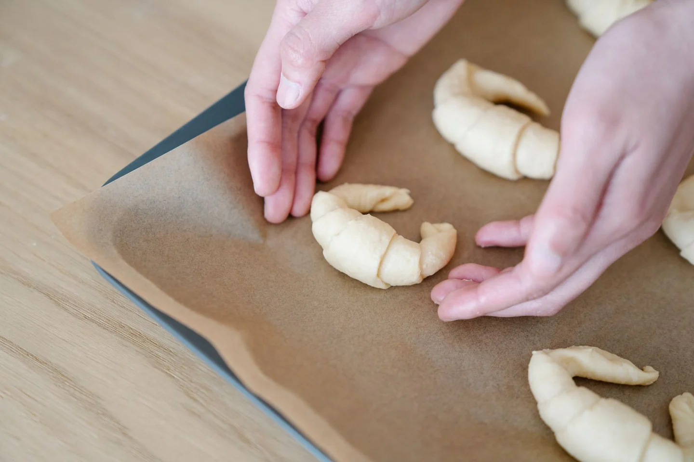
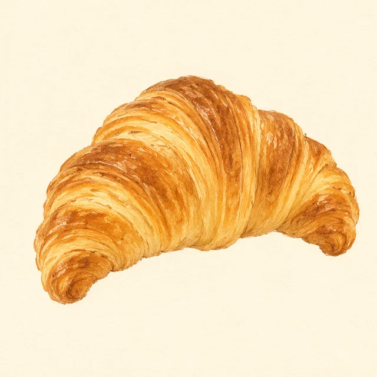
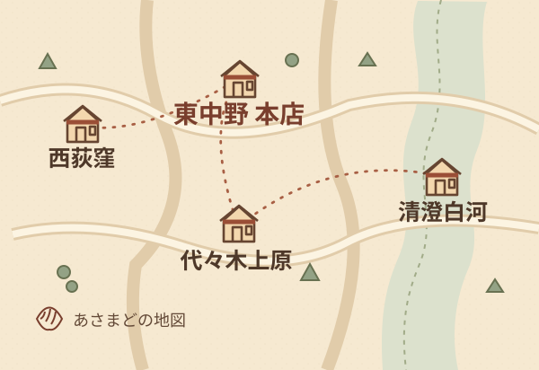

08:00
クロワッサン
開店に合わせて。コーヒーのおともに。
パンを見る ↗
第1話 ・ パンがやけるころ
発酵のすすみ具合で、
少しお待たせすることも。
第2話 ・ パンのかご
朝・昼・おやつで選べる、
あさまどの定番。

外はさくっと、中はしっとり。発酵バターの香りを楽しむ一品。

香ばしい皮ともっちりした中身。厚めに切って、スープと一緒に。

底のカリッとした部分までおいしい。軽く温めるとバターが香る。
表示価格は税込です。
第3話 ・ お店をあける日
月・火はお休み。
東中野本店の営業日です。
水〜日 8:00〜17:00、月・火定休。
| 月 | 火 | 水 | 木 | 金 | 土 | 日 |
|---|
「休」は定休日。売り切れ次第終了。
第4話 ・ まどべの便り
小さなお知らせと、パンをおいしく食べる話。
おしまいのページ
はじまりは東中野。
それぞれの街にも、小さな窓を。
朝8:00〜17:00 ／ 月・火休み
朝9:00〜17:00 ／ 月・火休み
朝9:00〜17:00 ／ 月・火休み
朝9:00〜17:00 ／ 月・火休み
